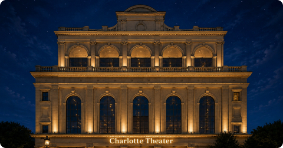
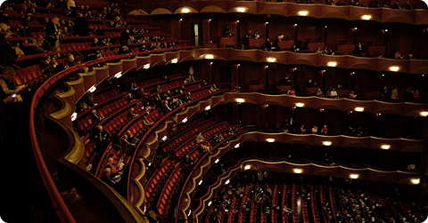
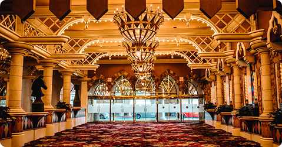
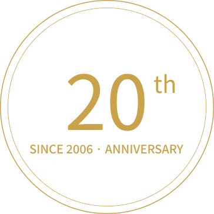

샤롯데씨어터
샤롯데씨어터
샤롯데씨어터 소개
대한민국 최초이자 기준이 된, 최고의 뮤지컬 전용 극장
- 1,260석 객석 규모
- 2006년 개관 연도
- 50+ 공연 편수
-
- 01BEGINNING
1,260석 규모, 대한민국 최초의 뮤지컬 전용 극장 
- 1,260석 규모의 대한민국 최초의 뮤지컬 전용 극장 샤롯데씨어터는 2004년 착공하여 2006년 10월 28일 개관하였습니다. <라이온 킹> 한국 초연을 시작으로 <캣츠>, <오페라의 유령>, <지킬 앤 하이드> 그리고 <알라딘>까지 50여 편의 우수한 작품들을 국내 관객들에게 선보여오며 공연 시장의 확대와 문화 발전에 기여해왔습니다.
- 01BEGINNING
-
- 02STANDARD
극장의 ‘표준’으로 자리매김하다 
- 개관 이후, 20년이라는 시간과 역사 속에서 샤롯데씨어터는 극장의 ‘표준’으로 자리매김 하였습니다. 무수한 시행착오와 실험 끝에 한 작품의 공연 기간, 주요 관객 층인 여성의 편의를 생각한 설비, 단순한 공연 관람을 넘어 작품 자체에 몰입할 수 있게 하는 다양한 부대시설과 마케팅을 선보이며 뮤지컬 시장의 아이콘이 되었습니다.
- 02STANDARD
-
- 03FUTURE
더 높은 도약을 향한 새로운 여정 
- 2025년 기준 1조 7,000억 원 규모의 공연 시장을 기반으로, 샤롯데씨어터는 더 높은 도약을 향한 새로운 여정을 시작합니다. 객석을 포함한 전면 리뉴얼을 통해 극장의 품격을 한층 끌어올리고, 독자적인 작품 기획·제작을 통해 흥행성과 작품성을 모두 갖춘 ‘진정한 라이브 공연’을 구현하여 관객에게 전에 없던 감동을 선사할 것입니다.
- 03FUTURE

대한민국 최초의 뮤지컬 전용 극장으로 문을 연 지 20년. 그 시간 동안 쌓아온 신뢰와 경험을 바탕으로, 샤롯데씨어터는 다음 20년을 위한 새로운 걸음을 준비하고 있습니다.